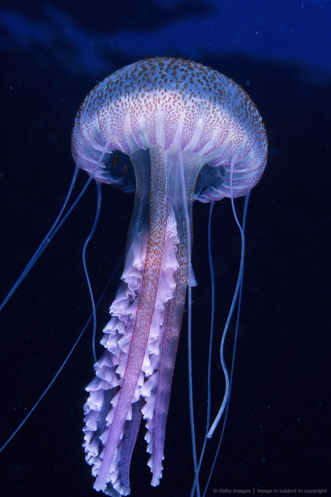
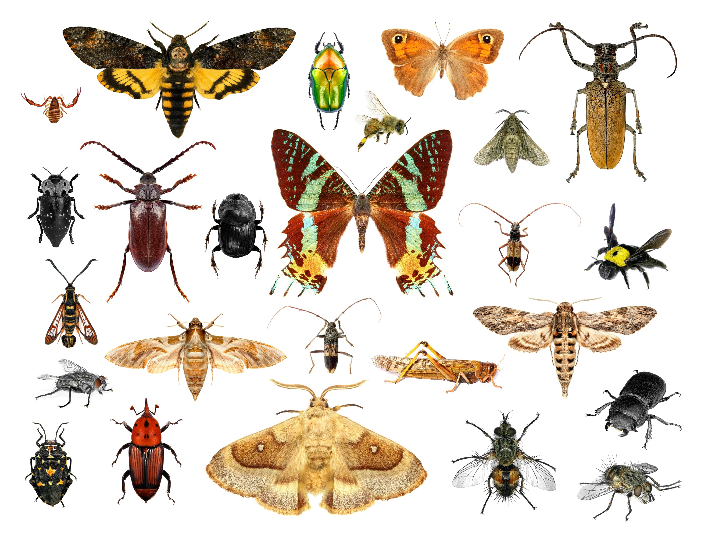

Reino Animal
Os animais são seres vivos que também possuem um ciclo vital: nascem, desenvolvem-se, reproduzem-se e morrem.
Os animais são seres que possuem uma capacidade de locomoção e reprodução sexuada. Além disso eles não são capazes de produzir seu próprio alimento.
Eles podem ser classificados em: vertebrados e invertebrados.
Animais Vertebrados
Os animais vertebrados possuem uma característica em comum, que é a presença da medula espinhal e coluna vertebral. Os animais que pertencem aos vertebrados são: os peixes, os anfíbios, os répteis, as aves e os mamíferos.
Peixes
Os peixes são animais que têm seu corpo coberto por escamas e sua respiração é feita pelas brânquias.
Além disso os ovos são colocados na água. Onde os filhotes irão se desenvolver.
Alguns exemplos de peixes: tubarão, peixe-palhaço, dourado e outros.
Anfíbios
Os anfíbios também nascem de ovos, e quando nascem esses filhotes são chamados de girinos. Enquanto filhotes eles vivem embaixo da água, e na vida adulta conseguem viver na terra e na água. Alguns exemplos de anfíbios: sapos, rãs, salamandras.
Répteis
Os répteis são animais que nascem de ovos, que se desenvolvem fora do corpo da mãe. Seu corpo é coberto por escamas ou uma carapaça. E podem viver na água ou na terra. Alguns exemplos de répteis: jacaré, tartaruga, cobra, e outros.
Aves
Assim como os répteis as aves também nascem de ovos. Mas as aves têm seu corpo coberto por penas, possuem bicos e sua maioria delas conseguem voar. Alguns exemplos de aves: águia, tucano, pinguim, papagaio, e outros.
Mamíferos
Os mamíferos diferente dos outros animais, são gerados dentro do corpo da mãe. Eles possuem pelos, e enquanto filhotes se alimentam do leite materno. Alguns exemplos de mamíferos: seres humanos, elefantes, cachorros, gatos, e outros.
Animais invertebrados
Diferente dos animais vertebrados, os animais invertebrados não possuem medula espinhal e coluna vertebral. Os animais invertebrados são dividos em: poríferos, cnidários, platelmintos, nematelmintos, moluscos, anelídeos, equinodermos e artrópodes.
Poríferos

Os poríferos são animais que vivem em água doce ou salgada. Eles possuem poros em todo o seu corpo, e não possuem órgãos. Eles também não conseguem se locomover. Os poríferos são mais conhecidos como as esponjas.
Cnidários
Os cnidários vivem no ambiente aquático, e possuem uma capacidade de se locomoverem. Além de possuírem alguns tentáculos. Alguns exemplos de cnidários: águas-vivas, corais, caravelas e outros.
Platelmintos
Os platelmintos possuem um corpo achatado e podem ter uma vida livre ou parasita.
São mais conhecidos como vermes.
Alguns exemplos: tênias, planárias e outros.
Nematelmintos
Os nematelmintos são seres com corpo alongado, cilíndrico e com as extremidades afinadas.
Eles podem ter a vida livre ou parasita. Um exemplo de nematelmintos são lombrigas.
Moluscos
Os moluscos são animais de corpo mole e possuem uma concha que pode ser interna(dentro) ou externa(fora). Os animais que possuem uma concha interna são as lulas e os polvos E os animais que possuem uma concha externa são os caramujos e os mexilhõs. Eles podem viver na água ou na terra.
Anelídeos
Os anelídeos são seres que possuem o corpo mole e dividido em anéis. Alguns exemplos de anelídeos são as minhocas e as sanguessugas.
Equinodermos
Os equinodermos vivem no ambiente aquático. E todos eles possuem cinco lados iguais.
Artrópodes
 Os artrópodes é o grupo com a maior diversidade de animais e de diversas características.
Alguns exemplos de artrópodes:
Insetos: borboletas, abelhas, moscas.
Aracnídeos: aranhas, escorpiões, carrapato.
Miriápodes: centopeia, lacraias.
Crustáceos: lagostas, caranguejos, siris.